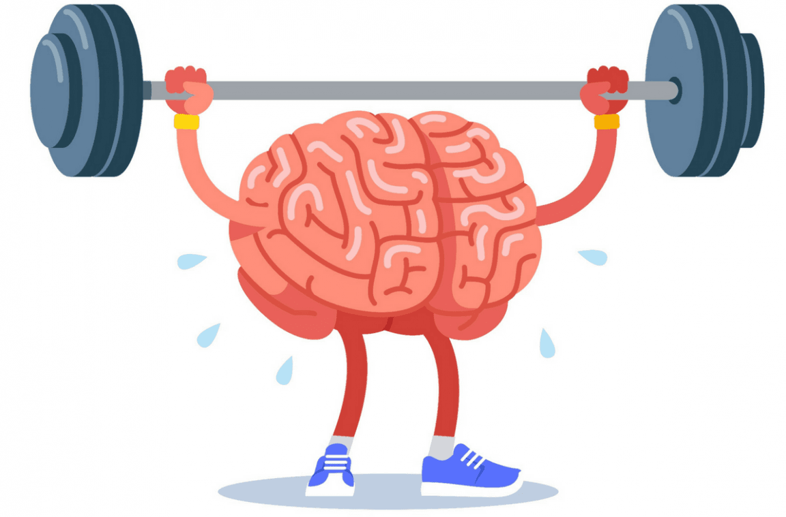

(فوائد الرياضة)
فوائد الرياضة للجسم والعقل
اولا ::فوائد الرياضة للجسم
تجعل الجسم مثالياً، ومتناسقاً، ومعافى، وسليماً، إذ إنها تقويه، وتحارب السمنة
وقاية الإنسان من الإصابة بالعديد من الأمراض، ومنها: مرض السمنة الذي يعد سبباً للإصابة بأمراض أخرى، مثل: مرض الانزلاق الغضروفي، ومرض السكري، وارتفاع ضغط الدم.
الوقاية من الإصابة بالأمراض المزمنة؛ كأمراض الشرايين، والقلب، والسكتات الدماغية، والسرطان، والسكري.
الوقاية من الإصابة بمشاكل المفاصل، ومشاكل العظام؛ كالهشاشة، كما تزيد مرونة العظام، وقوتها.
ثانيا:: فوائد الرياضة للعقل

نشيط العقل، وتعزيز الذكاء لدى الفرد بكل أنواعه، وخاصةً ذكاء النفس حركي، والذكاء الاجتماعي.
زيادة قوة الذاكرة، ونشاطها، لأنها تؤثر بشكلٍ إيجابي على نشاط الدماغ.
تعزيز قوة الملاحظة لدى الفرد، وتحسين سرعة بديهته، وتمنحه القدرة على التركيز، وتقلل نسبة التشتت الذهني عنده.
زيادة التحصيل الأكاديمي لدى الطلاب، وتقليل مللهم من المناهج الدراسية الروتينية.
زيادة النمو الذهني والاجتماعي لدى الشخص، وتعزيز علاقته مع بيئته المحيطة به.
زيادة إنتاجية الموظفين، وقدرتهم على الاستمرارية في العمل، ومساعدتهم على كسر الروتين الذي يؤدي إلى شعورهم بالملل
مصادر خارجية عن اهمية الرياضة للجميع